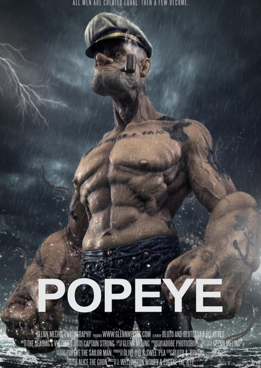
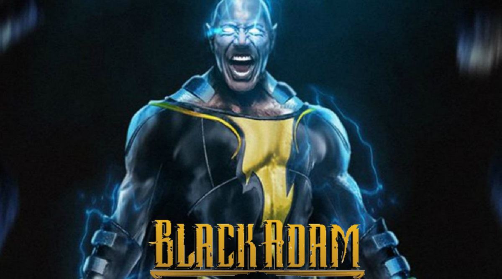
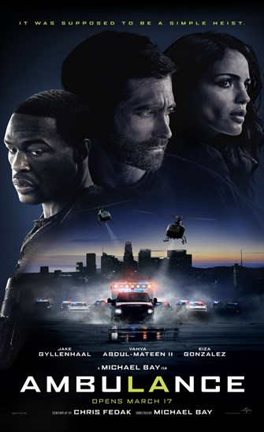

<html>
<head>
<meta charset="UTF-8">

    <meta name="viewport" content="with=device-width, initial-scale=1.0"><title>Lights Cinema</title>
<link rel="stylesheet" type="text/css" href="stylesheet.css">
</Html>    
</head>
<body>
<header>
<a href="Category.hml">
<a href="#" class="logo">Light Cinema</a>
</a>
<hr>
<nav>
<table cellspacing="6" cellpadding="6">
<tr>
<td><a href="Index.html">Index</a></td>
<td><a href="Content.html">Content</a></td>
<td><a href="Services.html">Services</a></td>
<td><a href="Category.html">Category</a></td>
<td><a href="Contact Us.html">Contact Us</a></td>
</header>
</table>
</tr>
<hr>
<body>
<h1>MOVIES SHOWING</h1>
<div-1> 
<h1>The Batman</h1>
<p>When the Riddler, a sadistic serial killer, begins murdering key political figures in Gotham, Batman is forced to investigate the city's hidden corruption and question his family's involvement. The Batman is a 2022 American superhero film based on the DC Comics character Batman. Produced by Warner Bros. Pictures, DC Films, 6th & Idaho, and Dylan Clark Productions, and distributed by Warner Bros. Pictures, it is a reboot of the Batman film franchise. The film was directed by Matt Reeves,
 who wrote the screenplay with Peter Craig.</p>
</div-1>
<div-2> 
<h1>Doctor Strange In The Multivese Of Madness</h1>
<p>Dr. Stephen Strange casts a forbidden spell that opens the doorway to the multiverse, including alternate versions of himself, whose threat to humanity is too great for the combined forces of Strange, Wong, and Wanda Maximoff.Parents need to know that Doctor Strange in the Multiverse of Madness -- which follows the events of Spider-Man: No Way Home and Loki -- centers around Doctor Strange (Benedict Cumberbatch) helping mysterious, multiverse-jumping teen America Chavez (Xochitl Gomez) figure out which supernatural sorcerer is hunting her. </p>
</div-2>
<div-3> 
<h1>Popeye</h1>
<p>
Popeye is an upcoming 2019 American Computer animated family action comedy live action film produced by Warner Bros. Pictures, Paramount Pictures, Warner Animation Group and King Features Syndicate and distributed by Warner Bros. Pictures. The film is loosely based on the comic strip Popeye by E.C. Segar, is scheduled to be released on July, 2019.</p>
</div-3>
<div-4> 
<h1>Black Adam</h1>
<p>Nearly 5,000 years after he was bestowed with the almighty powers of the Egyptian gods-and imprisoned just as quickly-Black Adam (Johnson) is freed from his earthly tomb, ready to unleash his unique form of justice on the modern world.Black Adam is an upcoming American superhero film based on the DC Comics character of the same name. Produced by New Line Cinema, DC Films, Seven Bucks Productions, and FlynnPictureCo., and set for distribution by Warner Bros. Pictures, it is intended to be a spin-off from Shazam! (2019) and the eleventh film in the DC Extended Universe (DCEU). Directed by Jaume Collet-Serra from a screenplay by Adam Sztykiel, Rory Haines, and Sohrab Noshirvani, the film stars Dwayne Johnson as Teth-Adam / Black Adam alongside Noah Centineo, Aldis Hodge, Sarah Shahi, Quintessa Swindell, and Pierce Brosnan.
</p>
</div-4>
<div-5> 
<h1>Ambulance</h1>
<p>Ambulance is a 2022 American action thriller film directed and produced by Michael Bay. A co-production between New Republic Pictures, Project X Entertainment, and Bay Films, it is based on the 2005 Danish film of the same name by Laurits Munch-Petersen and Lars Andreas Pedersen. The film stars Jake Gyllenhaal, Yahya Abdul-Mateen II, and Eiza González and follows two adoptive siblings turned bank robbers who hijack an ambulance and take two first responders hostage.</p>
</div-5>
<div-6> 
<h1>The Spider-Man: No Way Home</h1>
<p>Spider-Man: No Way Home is a 2021 American superhero film based on the Marvel Comics character Spider-Man, co-produced by Columbia Pictures and Marvel Studios and distributed by Sony Pictures Releasing. It is the sequel to Spider-Man: Homecoming (2017) and Spider-Man: Far From Home (2019), and the 27th film in the Marvel Cinematic Universe (MCU). The film was directed by Jon Watts and written by Chris McKenna and Erik Sommers. It stars Tom Holland as Peter Parker / Spider-Man alongside Zendaya, Benedict Cumberbatch, Jacob Batalon, Jon Favreau, Jamie Foxx, Willem Dafoe, Alfred Molina, Benedict Wong, Tony Revolori, Marisa Tomei, Andrew Garfield, and Tobey Maguire. In the film, Parker asks Dr. Stephen Strange (Cumberbatch) to use magic to make his identity as Spider-Man a secret again following its public revelation at the end of Far From Home. When the spell goes wrong, the multiverse is broken open which allows visitors from alternate realities to enter Parker's universe.
IMDb</p>
</div-6>
</nav>
<hr>
<footer>
<a href="https://www.youtube.com/watch?v=7Dbuc6vIRnE">
</a><br /> 
Copyright &copy; LightCinema.me  2022-2025
</footer>
</body>